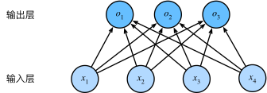
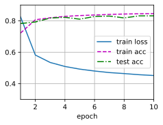
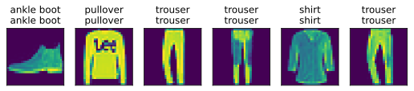

%matplotlib inline
%config InlineBackend.figure_format = 'svg' # 在 Jupyter 中设置矢量图显示
import torchvision
from torchvision import transforms
import torch
from torch.utils import data深度学习入门(day2) - softmax回归
softmax回归的数学原理
图片分类问题
假设输入是一个 2\times2 的灰度图像。每个图象对于四个特征 x_1, x_2, x_3, x_4。此外，假设每个图像都属于“猫”，“狗”，“鸡”中的一个。使用独热编码表示类别：(1, 0, 0)对应猫、(0, 1, 0)对应狗、(0, 0, 1)对应鸡： y \in \{ (1, 0, 0), (0, 1, 0), (0, 0, 1)\}
网络架构
首先未每个输入计算三个未规范化的预测：o_1, o_2 \text{和} o_3 \begin{aligned} o_1 &= x_1w_{11} + x_2w_{12} + x_3w_{13} + x_4w_{14} + b \\ o_2 &= x_1w_{21} + x_2w_{22} + x_3w_{23} + x_4w_{24} + b \\ o_3 &= x_1w_{31} + x_2w_{32} + x_3w_{33} + x_4w_{34} + b \end{aligned}
用神经网络图来描述计算过程

将权重放到 3\times4 的矩阵中，以上公式可以表示为：o = Wx + b。
softmax运算
通过softmax运算可以将未规范化的预测变换为非负数并且总和为1，同时让模型保持可导的性质。我们首先对每个未规范化的预测求幂，这样可以确保输出非负。为了确保最终输出的概率值总和为1，我们再让每个求幂后的结果除以它们的总和。如下式： \hat{y} = \text{softmax}(o) \quad 其中 \quad \hat{y_i} = \frac{\exp{(o_j)}}{\sum_{k}\exp{(o_k)}}
损失函数
使用交叉熵来衡量预测概率 \hat{y} 与 y 的区别，公式可以表示为：
L = -\sum_{i=1}^{n} y_i \log(\hat{y_i})
其中 \hat{y_i} = \frac{e^{o_i}}{\sum_{j=1}^n e^{o_j}} 是softmax函数的输出。
求导过程推导
设 z_k 是最后一层的输入，求 \frac{\partial L}{\partial o_k} ：
1. 展开交叉熵损失：
L = -\sum_{i=1}^n y_i \log\left(\frac{e^{o_i}}{\sum_{j=1}^n e^{o_j}}\right)
2. 化简对数项：
L = -\sum_{i=1}^n y_i \left(o_i - \log\left(\sum_{j=1}^n e^{o_j}\right)\right)
3. 分离求和项：
L = -\sum_{i=1}^n y_i o_i + \log\left(\sum_{j=1}^n e^{o_j}\right) \cdot \underbrace{\sum_{i=1}^n y_i}_{=1}
4. 对 z_k 求导数：
\frac{\partial L}{\partial o_k} = -y_k + \frac{e^{o_k}}{\sum_{j=1}^n e^{o_j}} = \text{softmax}(o_k) - y_k
—
#### 最终梯度表达式
\boxed{ \frac{\partial L}{\partial o_k} = \begin{cases} \text{softmax}(o_k) - 1 & \text{如果 } y_k = 1 \\ \text{softmax}(o_k) & \text{其他情况} \end{cases} }
注：当且仅当 y_k 是真实类别时导数为 \text{softmax}(o_k)-1，其他情况导数为 \text{softmax}(o_k)。即真实类别时梯度为负，其他情况为正，优化是往正确概率的方向调整。
softmax回归的代码实现
导入图像分类数据集
使用内置的Fashion-MNIST数据集
定义加载mnist数据集函数
def get_dataloader_workers():
return 4
def load_data_fashion_mnist(batch_size, resize=None):
"""下载Fashion-MNIST数据集，然后将其加载到内存中"""
trans = [transforms.ToTensor()]
if resize:
trans.insert(0, transforms.Resize(resize))
trans = transforms.Compose(trans)
mnist_train = torchvision.datasets.FashionMNIST(
root="./data", train=True, transform=trans, download=True)
mnist_test = torchvision.datasets.FashionMNIST(
root="./data", train=False, transform=trans, download=True)
return (data.DataLoader(mnist_train, batch_size, shuffle=True,
num_workers=get_dataloader_workers()),
data.DataLoader(mnist_test, batch_size, shuffle=False,
num_workers=get_dataloader_workers()))batch_size = 256
train_iter, test_iter = load_data_fashion_mnist(batch_size)初始化模型参数，由于要将输入的图片展开为一维，W 矩阵的形状为 784\times10
num_inputs = 784
num_outputs = 10
W = torch.normal(0, 0.1, size=(num_inputs, num_outputs), requires_grad=True)
b = torch.zeros(num_outputs, requires_grad=True)定义softmax操作
def softmax(X):
X_exp = torch.exp(X)
partition = X_exp.sum(1, keepdim=True) # 对行求和，并保留维度，partition矩阵的每一个元素都是行和。
return X_exp / partition上述代码将X的矩阵每个元素变成元素非负，且行和为1的矩阵。
X = torch.normal(0, 1, (2, 5))
X_prob = softmax(X)
X_prob, X_prob.sum(1)(tensor([[0.4655, 0.0943, 0.2297, 0.0336, 0.1770],
[0.1538, 0.0851, 0.3993, 0.1771, 0.1848]]),
tensor([1., 1.]))注：矩阵中非常大或者非常小的元素可能会造成数值上溢或下溢，代码并没有措施防止这点。
定义回归模型
模型为线性回归与softmax运算的组合
def net(X):
return softmax(torch.matmul(X.reshape((-1, W.shape[0])), W) + b)定义损失函数
使用花式索引，以y作为y_hat中概率的索引，快速选择 \hat{y_i}
y = torch.tensor([0, 2, 1])
y_hat = torch.tensor([[0.6, 0.3, 0.1], [0.3, 0.2, 0.5], [0.3, 0.4, 0.3]])
y_hat[range(len(y_hat)), y]tensor([0.6000, 0.5000, 0.4000])一行代码就可以实现交叉熵损失函数
def cross_entropy(y_hat, y):
return -torch.log(y_hat[range(len(y_hat)), y]) # 化简后的交叉熵形式
cross_entropy(y_hat, y)tensor([0.5108, 0.6931, 0.9163])评估预测精度
用正确预测数量与总预测数量之比评估准确率，\hat{y} 是一个存储概率的矩阵，利用torch.argmax()方法找出最大概率值的列号，与 y 进行对比。
def accuracy(y_hat, y):
"""计算预测正确的数量"""
if len(y_hat.shape) > 1 and y_hat.shape[1] > 1: # y_hat 为矩阵
y_hat = y_hat.argmax(axis=1)
cmp = y_hat.type(y.dtype) == y
return float(cmp.type(y.dtype).sum())准确率为
accuracy(y_hat, y) / len(y)1.0对于任意的迭代器data_iter，我们可以评估在任意模型net的精度。
# 先定义一个累加器工具
class Accumulator:
"""在n个变量上累加"""
def __init__(self, n):
self.data = [0.0] * n # 定义长度为n的列表
def add(self, *args):
self.data = [a + float(b) for a, b in zip(self.data, args)] # 列表与输入值累加
def reset(self):
self.data = [0.0] * len(self.data)
def __getitem__(self, idx):
return self.data[idx] # 重写[]方法
def evaluate_accuracy(net, data_iter):
"""计算在指定数据集上模型的精度"""
metric = Accumulator(2) # ["正确预测数", "预测总数"]
with torch.no_grad():
for X, y in data_iter:
metric.add(accuracy(net(X), y), y.numel())
return metric[0] / metric[1]
evaluate_accuracy(net, test_iter)0.1229训练
首先，定义一个函数来训练一个迭代周期，updater是更新模型参数的常用函数，这里使用梯度下降算法。
def sgd(params, lr, batch_size):
with torch.no_grad():
for param in params:
param -= lr * param.grad / batch_size # 除以批量大小等价于损失函数中求批量的均值
param.grad.zero_()
lr = 0.1
def updater(batch_size):
return sgd([W, b], lr, batch_size)
def train_epoch(net, train_iter, loss, updater):
"""训练模型一个迭代周期"""
metric = Accumulator(3) # 训练损失总和、训练准确度总和、样本数
for X, y in train_iter:
# 计算梯度并更新参数
y_hat = net(X)
l = loss(y_hat, y)
l.sum().backward()
updater(X.shape[0])
metric.add(float(l.sum()), accuracy(y_hat, y), y.numel())
# 返回训练损失和训练精度
return metric[0] / metric[2], metric[1] / metric[2]
训练之前，定义一个在动画中绘制数据的实用程序类Animator，它可以可视化训练过程。
import matplotlib.pyplot as plt
from IPython import display
class Animator:
"""在动画中绘制数据"""
def __init__(self, xlabel=None, ylabel=None, legend=None, xlim=None,
ylim=None, xscale='linear', yscale='linear',
fmts=('-', 'm--', 'g-.', 'r:'), nrows=1, ncols=1,
figsize=(3.5, 2.5)):
# 创建图形和坐标轴
self.fig, self.axes = plt.subplots(nrows, ncols, figsize=figsize)
if nrows * ncols == 1:
self.axes = [self.axes] # 统一为列表格式方便后续操作
# 坐标轴配置函数（原生替代d2l.set_axes）
def config_axes(ax):
ax.set_xlabel(xlabel)
ax.set_ylabel(ylabel)
if xlim: ax.set_xlim(xlim)
if ylim: ax.set_ylim(ylim)
ax.set_xscale(xscale)
ax.set_yscale(yscale)
if legend: ax.legend(legend)
ax.grid()
self.config_axes = lambda: config_axes(self.axes[0]) # 绑定配置函数
# 初始化数据容器
self.X, self.Y, self.fmts = None, None, fmts
def add(self, x, y):
# 处理单值输入（兼容标量输入）
if not hasattr(y, "__len__"):
y = [y]
n = len(y)
# 处理x输入（兼容标量输入）
if not hasattr(x, "__len__"):
x = [x] * n # 所有y序列共享相同x值
# 初始化数据存储列表
if not self.X:
self.X = [[] for _ in range(n)]
if not self.Y:
self.Y = [[] for _ in range(n)]
# 添加数据点
for i, (a, b) in enumerate(zip(x, y)):
if a is not None and b is not None:
self.X[i].append(a)
self.Y[i].append(b)
# 清除当前图形并重绘
self.axes[0].cla()
for x_data, y_data, fmt in zip(self.X, self.Y, self.fmts):
self.axes[0].plot(x_data, y_data, fmt)
# 配置坐标轴
self.config_axes()
# 动态显示图形（需在Jupyter中运行）
display.display(self.fig)
display.clear_output(wait=True)实现一个训练函数，该训练函数将会运行多个迭代周期（由num_epochs指定）。在每个迭代周期结束时，利用test_iter访问到的测试数据集对模型进行评估。最后利用Animator类来可视化训练进度。
def train(net, train_iter, test_iter, loss, num_epochs, updater):
"""训练模型"""
animator = Animator(xlabel='epoch', xlim=[1, num_epochs], ylim=[0.3, 0.9],
legend=['train loss', 'train acc', 'test acc'])
for epoch in range(num_epochs):
train_metrics = train_epoch(net, train_iter, loss, updater)
test_acc = evaluate_accuracy(net, test_iter)
animator.add(epoch + 1, train_metrics + (test_acc,))
train_loss, train_acc = train_metrics
assert train_loss < 0.5, train_loss
assert train_acc <= 1 and train_acc > 0.7, train_acc
assert test_acc <= 1 and test_acc > 0.7, test_acc训练10个迭代周期，学习率0.1
num_epoch = 10
train(net, train_iter, test_iter, cross_entropy, num_epoch, updater)
预测
训练完成后，使用模型对图片进行分类预测，比较实际标签和预测。
def get_fashion_mnist_labels(labels):
"""返回Fashion-MNIST数据集的文本标签"""
text_labels = ['t-shirt', 'trouser', 'pullover', 'dress', 'coat',
'sandal', 'shirt', 'sneaker', 'bag', 'ankle boot']
return [text_labels[int(i)] for i in labels]
def show_images(imgs, num_rows, num_cols, titles=None, scale=1.5): #@save
"""绘制图像列表"""
figsize = (num_cols * scale, num_rows * scale)
_, axes = plt.subplots(num_rows, num_cols, figsize=figsize)
axes = axes.flatten()
for i, (ax, img) in enumerate(zip(axes, imgs)):
ax.imshow(img.numpy())
ax.axes.get_xaxis().set_visible(False)
ax.axes.get_yaxis().set_visible(False)
if titles:
ax.set_title(titles[i])
return axes
def predict(net, test_iter, n=6):
"""预测标签"""
for X, y in test_iter:
break
trues = get_fashion_mnist_labels(y)
preds = get_fashion_mnist_labels(net(X).argmax(axis=1))
titles = [true + '\n' + pred for true, pred in zip(trues, preds)]
show_images(
X[0:n].reshape((n, 28, 28)), 1, n, titles=titles[0:n]
)
predict(net, test_iter)
总结
训练softmax回归循环模型与训练线性回归模型非常相似：先读取数据，再定义模型和损失函数，然后使用优化算法训练模型。大多数常见的深度学习模型都有类似的训练过程。